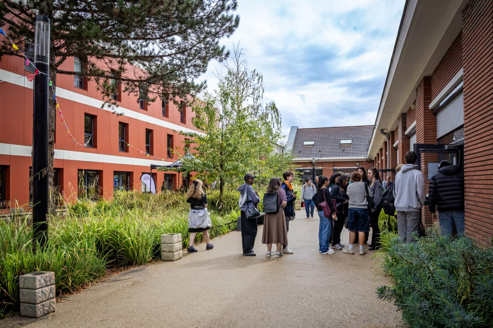
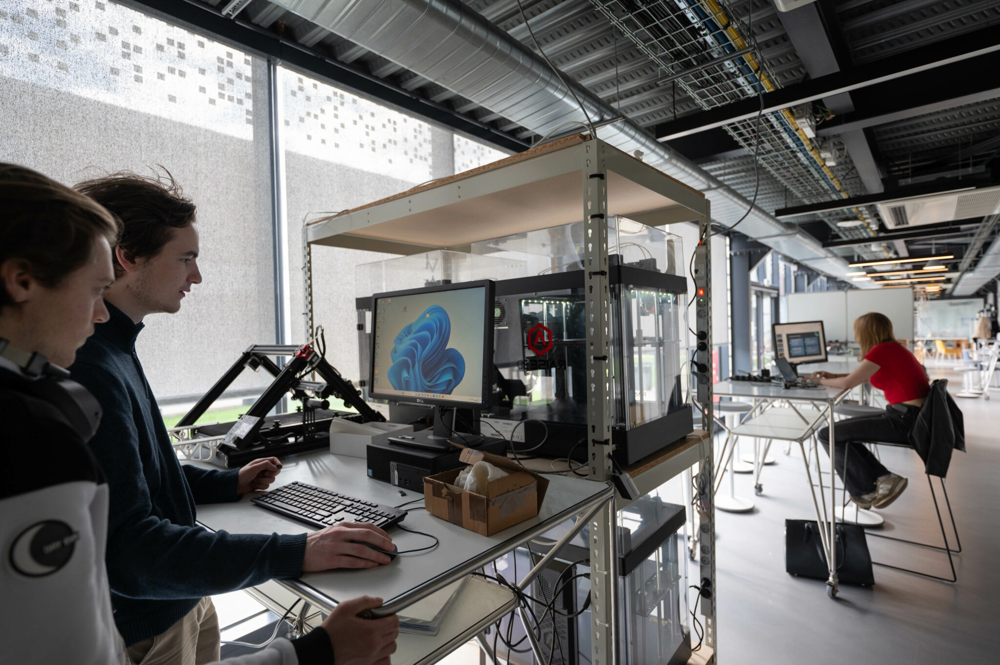

🏫 Installations
Découvrez les espaces dédiés aux étudiants sur le campus.

Espace co-working
Un espace moderne pour travailler en groupe, collaborer et développer vos projets.

Student Hub
Un lieu de détente pour se relaxer entre les cours et rencontrer d'autres étudiants.

Innovation Lab
Un laboratoire dédié à l’innovation technologique et aux projets expérimentaux.
🎉 Vie associative
Impliquez-vous dans la vie du campus à travers nos associations dans le thème de l'informatique !
Club CTfrei
CTfrei initie les étudiants aux CTF (Capture The Flag) et à la cybersécurité. Elle participe à des CTF universitaires et forme une équipe pour la compétition InCyber.
Efrei Défense & Sécurité
Cette association réunit les étudiants réservistes de la Garde Nationale et ceux passionnés par les enjeux de défense et de sécurité. Elle sensibilise notamment aux enjeux de souveraineté et de cybersécurité.
One Panthéon
One Panthéon développe des projets informatiques en groupe (applications, logiciels, sites web) et propose des ateliers pour développer créativité, gestion de projet et compétences techniques.
💬 Témoignages étudiants
Ce que pensent nos étudiants de leur expérience à l’EFREI.
Une formation complète et des projets très concrets ! — Lucas, étudiant en Bachelor
Les associations rendent la vie sur le campus incroyable. — Sarah, cycle ingénieur
Les professeurs sont à l’écoute et très compétents. — Mehdi, Prépa